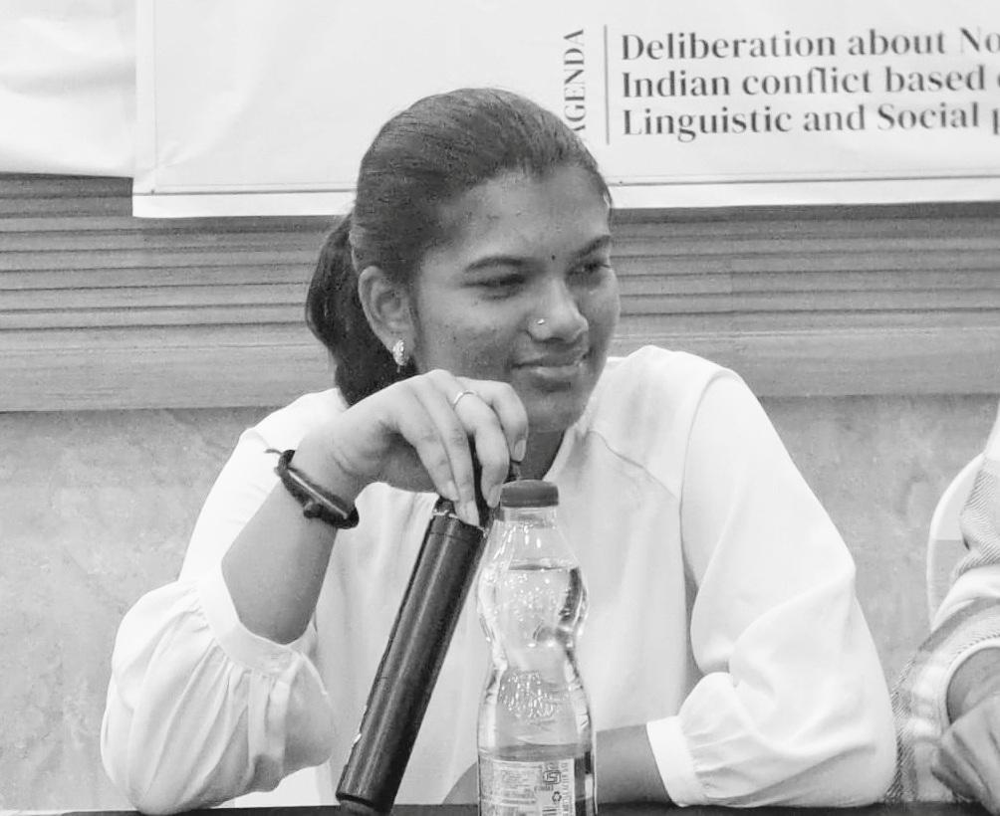
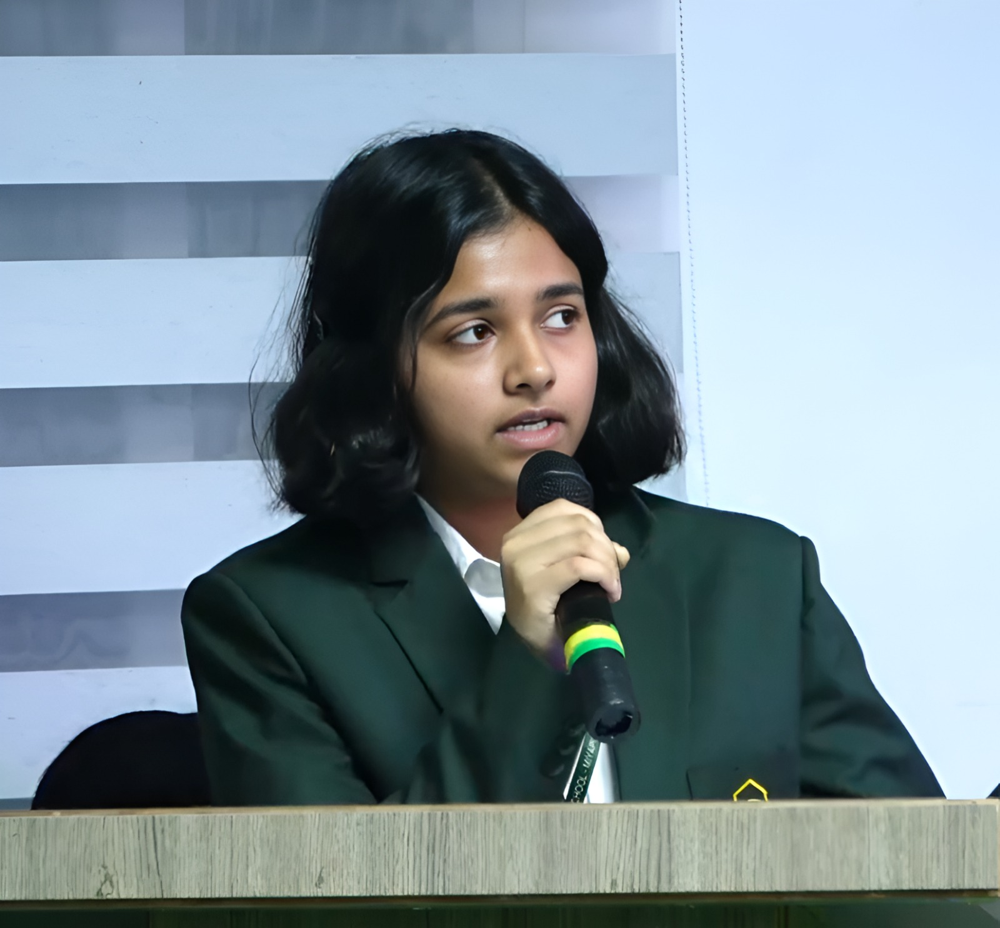
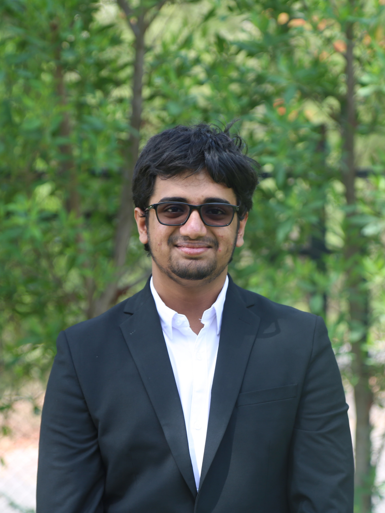

About the Committee
The International Press serves as a global network of media professionals and agencies working to report on world events, defend press freedom, and uphold strict ethical standards across nations. In Model UN simulations, this translates into an active media corps that investigates committee dynamics, interviews delegates, edits breaking news pieces, and covers high-stakes press conferences
Agenda
- Addressing global conflicts and peacekeeping operations
- Sanctions and international enforcement mechanisms
- Security implications of emerging technologies
Background Guide
Download the official background guide for this committee: UNSC Background Guide (PDF)
Executive Board

Head of IP: Venkat Kashvi
Venkata Kashvi M is an enthusiastic participant in MUNs with a knack for the International Press. After a short break, she is ready to see well written articles and brilliant press conferences. All the best.

Editor in chief: Shvika Saxena
Shivika Saxena, a Grade 12 student at DPSH is a seasoned orator and writer who has held multiple leadership positions in school cabinets and youth parliaments. Shivika has been the Chief Editor of the school magazine and is an enthusiastic contributor to its editorial and reporting sections. Her proficiency spans writing, debates, journalism, Olympiads and academics. An appreciator of meaningful storytelling, she has a keen eye for detail and objectivity, striving to ensure that all voices are heard. A classical literature, volleyball, global affairs, and nature enthusiast she will mostly be found listening to music- from alternative indie to dream pop. She is grateful and eager to join DPSH MUN as the Editor-in-Chief of IP, looking forward to collaborating, creating and imagining.

Head of Photojournalism: Bhavani Shankar
Shankar is a 3rd year civil engineering student, with a passion for cameras and filmmaking. He has extensive experience in cinematography, editing, and design work, both in and outside of school.Shankar is thrilled to be Director of Photography for IP this year, a team he has worked with for the past two years. He has served as an Executive Board Member and Deputy Secretary General, contributing significantly to the team’s success. In his free time, Shankar enjoys experimenting with cameras and AutoCAD, listening to CAS and The 1975, or discussing Formula 1 & IMAX.

Head of OC Photography
Short bio of the chairperson goes here.